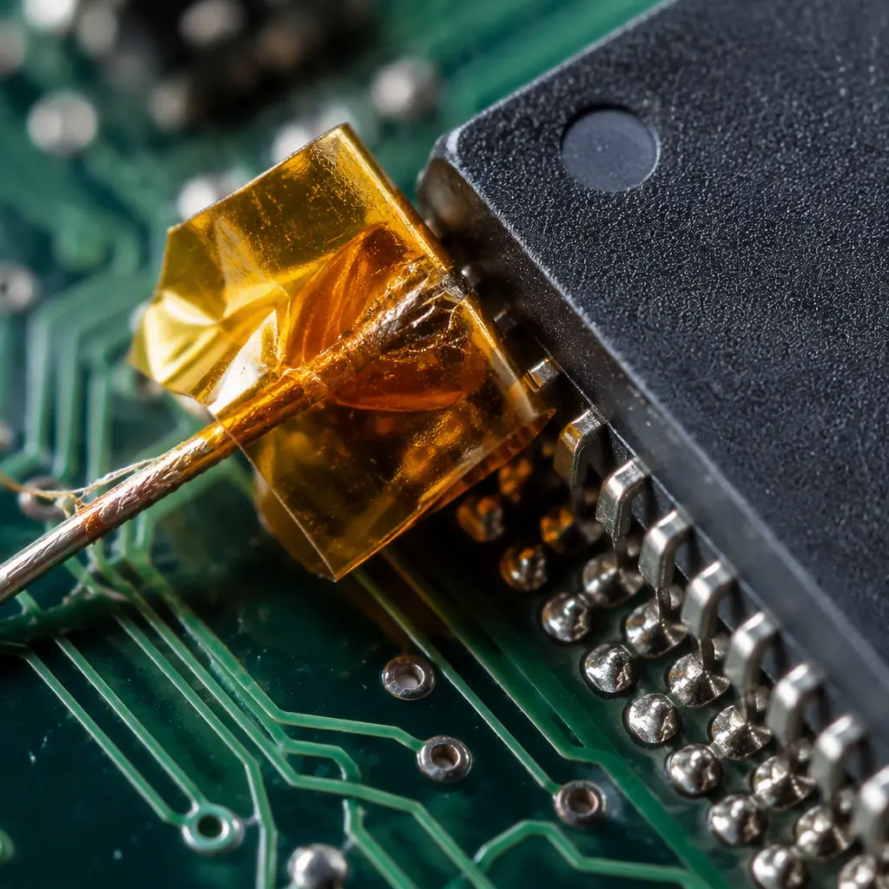
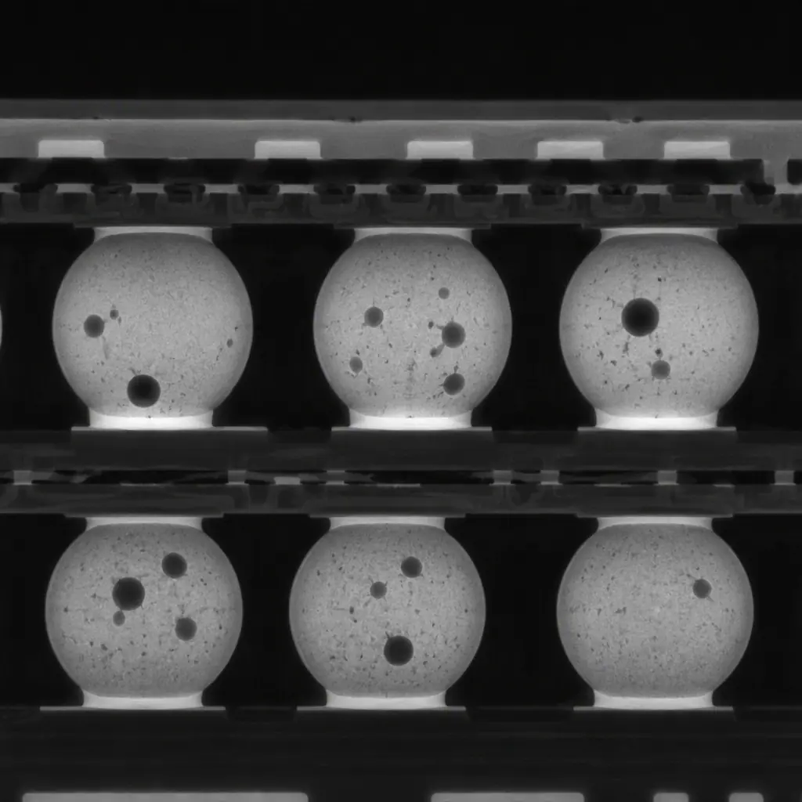

Reflow soldering is the thermal heartbeat of SMT assembly — and the most common source of defects that survive AOI undetected. A profile that's 3°C too cool in the peak zone produces cold joints that pass electrical test but fail after 200 thermal cycles. A ramp rate one degree per second too fast creates tombstoning on 0402 passives. And the ramp-soak-spike (RSS) profile that works perfectly for a 1.6mm FR-4 board with 200 components will under-reflow a 2.4mm board with a large BGA ground plane — even if the oven setting never changed.
Our eight SMT lines run approximately 1,200 reflow profiles per month across board thicknesses from 0.4mm flex to 3.2mm heavy copper, with component mixes spanning 0201 passives to 45mm BGA packages. Every profile is validated with a minimum of six thermocouple attachment points and verified against IPC-7530 and J-STD-020 moisture sensitivity limits. The difference between a good profile and a great one is roughly 2% first-pass yield — which on a 10,000-unit run means 200 boards that don't need rework.
The Four Thermal Zones — and What Each One Controls
A modern reflow oven has four distinct thermal zones. Each zone contributes to a specific metallurgical outcome, and each has failure modes that produce characteristic defects. Understanding the zone physics lets you isolate root cause in seconds instead of guessing.
Preheat Zone (25°C → 150°C, ramp 1-3°C/s)
The preheat zone drives off volatile solvents from the solder paste flux. Ramp too fast (>3°C/s) and the flux vehicle boils instead of evaporating — creating solder balls and splatter. Ramp too slow (<1°C/s) and the flux spends too long at intermediate temperatures, oxidizing and losing activation potential before the spike zone. For mixed-technology boards with large thermal mass differences, the preheat ramp rate is the single biggest lever for minimizing delta-T across the board. Our standard preheat for 1.6mm FR-4 with SAC305 paste is 1.8°C/s ±0.3°C, adjusted downward to 1.2°C/s for boards with BGA ground planes exceeding 25cm².
Soak Zone (150°C → 183°C, 60-120 seconds)
The soak zone equalizes temperature across the board and activates the flux chemistry. Insufficient soak time leaves cold spots on large components — the classic mechanism behind BGA head-in-pillow defects where the package ball reaches liquidus while the PCB pad is still 5°C behind. Excessive soak (>120s) consumes flux activators, reducing wetting force in the reflow zone. The soak zone is where component thermal mass differentials matter most: a 35×35mm BGA with internal copper planes can lag the PCB surface temperature by 12-18°C during soak. Our profile methodology targets a delta-T of ≤5°C at soak exit, verified by thermocouples on the largest BGA body and the thinnest PCB area. Related techniques for thermal management across the entire board are covered in our PCB thermal management guide.
Reflow Zone (183°C → Peak 235-250°C, 45-90s above liquidus)
This is where the solder powder melts, wets the pads, and forms the intermetallic compound (IMC) layer. Time above liquidus (TAL) is the critical parameter: too short (<30s for SAC305) and IMC formation is incomplete, producing weak joints; too long (>90s) and IMC grows excessively brittle, reducing thermal fatigue life. Peak temperature is alloy-specific: SAC305 requires 235-245°C; SnPb eutectic peaks at 205-220°C. The reflow zone is also where tombstoning initiates — the surface tension imbalance that lifts one end of a chip component occurs in the first 3-5 seconds after both terminations reach liquidus. Maintaining ramp rate below 2.5°C/s in this zone minimizes the thermal shock that exacerbates warpage on large packages. See our warpage prevention guide for the full interaction between reflow profile and board flatness.
Cooling Zone (Peak → 100°C, ramp 2-6°C/s)
The cooling rate determines the solder joint grain structure. Cooling too fast (>6°C/s) produces a fine-grained but stressed microstructure that's prone to tin whisker formation on lead-free alloys. Cooling too slow (<2°C/s) allows large IMC grains to form, reducing shear strength. The cooling zone is also where board warpage locks in — differential cooling between thick copper layers and thin dielectric creates residual stress. Our standard cooling rate is 3.5-4°C/s to 100°C, then natural convection below that threshold. For boards with heavy copper layers (>3oz), we reduce cooling to 2.5°C/s maximum to avoid delamination at the resin-copper interface.
Factory Reality: The most common reflow defect we see from customer-transferred programs isn't tombstoning or voiding — it's insufficient soak time. Boards profiled on a 5-zone oven then transferred to our 10-zone line show a 3-8% yield improvement simply because the longer soak zone achieves better delta-T equalization. If you're qualifying a new supplier, ask for the thermocouple data from their profile validation run — not just the final profile graph.
Six Profile Parameters That Control Defect Rates
Beyond the basic zone temperatures and belt speed, six specific parameters correlate directly with reflow defect rates. Each is measurable, adjustable, and has a known failure threshold backed by IPC and our internal process data.
| Parameter | Target (SAC305) | Tombstoning Risk | Voiding Risk | Cold Joint Risk |
|---|---|---|---|---|
| Preheat Ramp Rate | 1.5-2.5°C/s | High if >3°C/s | Medium if >3°C/s | Low |
| Soak Duration (150-183°C) | 70-100s | Low | Low | High if <60s |
| Delta-T at Soak Exit | ≤5°C | High if >8°C | Medium if >8°C | High if >10°C |
| Peak Temperature | 238-245°C | Low | High if >248°C | High if <233°C |
| Time Above Liquidus | 60-80s | Medium if >90s | High if >90s | High if <45s |
| Cooling Rate to 100°C | 3.0-4.5°C/s | Low | Low | Medium if <2°C/s |
For SAC305 alloy specifically, the peak temperature window is narrower than many engineers expect. Component datasheets typically list 260°C as the maximum peak package temperature per J-STD-020 — but that's the component limit, not the optimal process window. Running at 255°C won't damage components rated MSL 3, but it will accelerate IMC growth and increase void formation as flux boils off prematurely. Our internal process window targets 240°C ±3°C for standard SAC305, confirmed by monthly cross-section analysis of IMC thickness. For BGA-specific reflow concerns including X-ray void criteria, see our BGA assembly guide.

Thermocouple Placement — Why Position Matters More Than Profile Settings
A reflow profile is only as good as the thermocouple data it's built on. Attach a TC to the thinnest, lightest component on the board, and your profile will under-reflow every large package. Attach only to the largest BGA, and you'll scorch every small passive. Proper thermocouple placement requires minimum four measurement points — and for complex boards, six or more.
Largest BGA/QFN Package Body Center
Drill a small hole from the bottom of the board to reach the center pad, or use high-temperature epoxy to bond the TC bead to the package top surface. This is your canary for cold joints — if the largest thermal mass reaches peak temperature, everything smaller has already been above liquidus for longer.
Smallest Passive Component (0201 or 0402)
The smallest mass heats fastest and risks exceeding the maximum allowable temperature. This TC protects against component damage and tombstoning — if the small component's ramp rate exceeds 3°C/s anywhere in the preheat or reflow zones, reduce the zone setpoints for those zones.
Board Edge — Thinnest Cross-Section
Board edges heat and cool faster than the center due to convection exposure. A TC at the board edge captures the maximum ramp rate the board experiences, which is typically 0.5-1°C/s faster than the board center. This is your guardrail against delamination and warpage. Board edge warpage is covered in detail in our warpage prevention guide.
Board Center — Average Thermal Mass Area
This represents the majority of components and provides the baseline profile that most joints will experience. Use this TC for the primary profile graph in production documentation. For mixed-technology boards with both power electronics and fine-pitch logic, add a second center TC on a different region.
Procurement Insight: When evaluating an EMS provider's reflow capability, ask two questions: "How many thermocouples do you use for profile validation on a new product?" and "What's your maximum acceptable delta-T at soak exit?" Providers running 3 TCs with a 12°C delta-T tolerance are operating at commodity quality levels. Providers running 6+ TCs with a 5°C delta-T ceiling have invested in process engineering — and it shows in defect rates below 500 DPPM.
Void Reduction — IPC-7095 Class III Targets and How to Hit Them
Solder joint voids are gas pockets trapped during reflow, caused by flux outgassing that can't escape before the solder solidifies. IPC-7095 defines three void acceptance classes. Class III — required for automotive, medical, and aerospace — limits any single BGA void to 15% of joint area and total voiding to 20%. Hitting Class III consistently requires three profile strategies working together.
The soak zone is the primary lever for void reduction. Extending soak time from 60s to 90s gives flux volatiles more time to escape before the solder melts and seals the escape path. However, this also consumes more flux activator — so the soak extension must be paired with a paste formulation that has adequate activator longevity. Our standard void-reduction profile uses 85-95s soak and peak temperature at the lower end of the window (238°C instead of 245°C), which reduces the vapor pressure of trapped gases by roughly 15%. For boards that still exceed Class III limits after profile optimization, see our PCB testing methods comparison for X-ray inspection protocols.

Stencil Aperture Design for Void Escape
Voids don't just form at the solder-pad interface — they also migrate upward through the molten solder. Aperture designs that leave a gas escape path — such as home-plate or grid-segmented apertures for large thermal pads — can reduce voiding by 40-60% compared to full-coverage apertures. This interacts with the reflow profile: slower ramp rates give more time for gas to travel the escape path. See our SMT stencil design guide for aperture geometry best practices.
Profile Validation — The Three-Pass Methodology
A single profile run isn't sufficient for production qualification. The three-pass methodology — one cold pass, one nominal pass, one hot pass — validates that your profile has adequate process window margin. If any pass produces defects, the profile window needs tightening.
| Pass | Peak Temp Target | TAL Target | Purpose |
|---|---|---|---|
| Cold Pass | 232-235°C | 50-60s | Verify minimum acceptable reflow — checks for cold joints and incomplete wetting at lower boundary |
| Nominal Pass | 238-242°C | 65-75s | Production target — the profile that will run in daily production |
| Hot Pass | 245-248°C | 80-90s | Verify maximum acceptable reflow — checks for component damage, excessive IMC, and delamination at upper boundary |
All three passes should produce X-ray and cross-section results within IPC Class II or III limits (per product requirement). If the hot pass shows voiding above the Class limit, reduce peak temperature by 2-3°C and revalidate. If the cold pass shows incomplete wetting on any joint, extend TAL by 5-10s through belt speed reduction. A profile that passes all three has a process window of at least 10°C in peak temperature and 20s in TAL — adequate for production variation in oven loading and ambient conditions. For guidance on cross-section interpretation, see our cross-section report guide.
Putting It Together — A Production-Ready Profile
The reflow profile is not a set-and-forget parameter. Ambient humidity affects flux activation. Board loading density affects convection efficiency. Even a seasonal shift of 10°C in factory ambient temperature shifts the preheat ramp rate by 0.2-0.3°C/s — enough to move from nominal to marginal on boards with large thermal mass differentials. Profile validation should be repeated quarterly at minimum, and immediately after any change in PCB laminate supplier, solder paste lot, or board thickness.
At Huaxing PCBA, every new product introduction includes a full three-pass profile validation with minimum six thermocouple attachment points, documented X-ray void analysis against IPC-7095 Class III targets, and a signed profile report that travels with the production batch record. Our process engineering team has profiled over 8,000 unique board designs — from single-sided consumer IoT boards to 24-layer server backplanes with 3oz copper and 55mm BGA packages. Read our complete assembly process guide or contact our engineering team to discuss your specific reflow requirements.